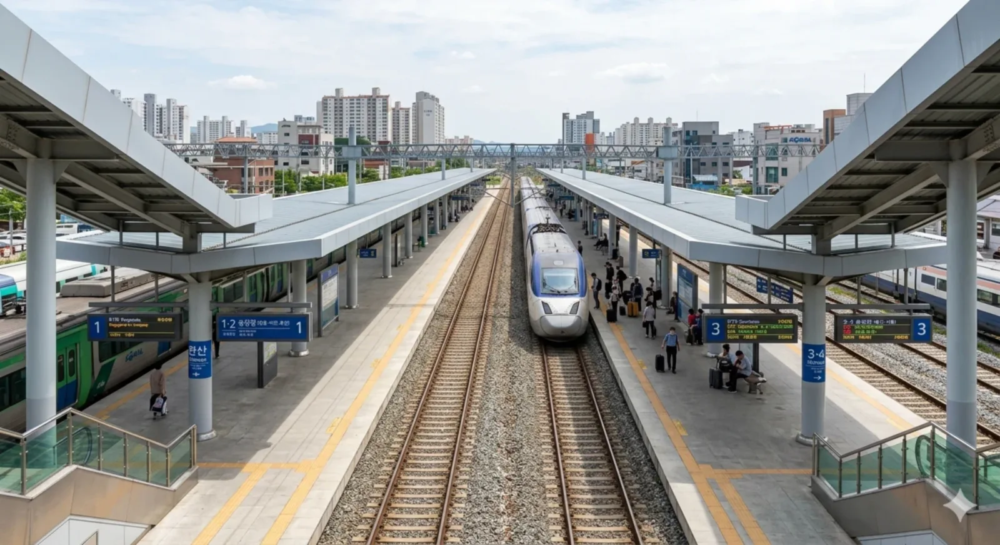

이 문서는 경빈선의 철도역에 대해 다룹니다. 전주시 완산구의 행정구역 자체에 대한 내용은 완산구 문서를 참고하십시오.
완산역
최근 수정 시각: 2026-03-08 00:26:00
토론
편집
역사
★
1. 개요
경빈선의 철도역. 전북특별자치도 전주시 완산구 효자동3가 31 소재.
전라선 전주역이 전주시 덕진구 외곽에 치우쳐 있어 철도 이용에 큰 불편을 겪었던 완산구 구도심 및 신시가지 주민들을 위해 지어진 전주 도심의 새로운 철도 교통 허브이다. 무려 KTX의 75%가 정차하는 핵심 1급역으로, 경부고속선과 직결되어 서울과 대전, 그리고 효빈광역시를 다이렉트로 이어준다.
2. 역 정보
전북도청 및 효자동 신시가지 한복판에 자리 잡고 있어 상징성과 접근성이 압도적이다. 그간 택시비 만 원씩 내고 덕진구까지 원정을 가야 했던 전주 시민들의 피눈물(...)을 닦아준 일등 공신. 역사가 위치한 곳 주변으로 상권이 폭발적으로 발달하여, 명실상부한 전주의 메인 기차역 타이틀을 전주역으로부터 빠르게 빼앗아 오고 있다.
3. 승강장
2면 4선의 쌍섬식 승강장 구조이다. 대규모 KTX 정차를 고려하여 승강장이 매우 길게 설계되었다.

완산역 승강장 전경
| 번호 | 노선 | 행선지 |
|---|---|---|
| 1·2 | 경빈선 (하행) | 정읍·비천·효빈 방면 |
| 3·4 | 경빈선 (상행) | 대전·용산·서울 방면 |
4. 역 목록
5. 연계 교통

역 광장 환승센터 전경
-
전주시 시내버스 (일반·간선)
- 일반 119, 165, 381, 383, 385, 74, 104 등
- 전북도청, 전주객사, 전주한옥마을, 전북대학교 등 전주 시내 주요 거점을 완벽하게 이어준다. 특히 165번을 타면 한옥마을까지 다이렉트로 꽂아주어 관광객들에게 수요가 폭발적이다. -
전주시 마을·지선버스
- 역 광장 환승센터에서 완산구 일대(서부신시가지, 효천지구 등)를 촘촘하게 잇는 다수의 노선이 수시로 운행 중이다. -
※ 한때 효빈광역시 시내버스가 들어올 것이라는 소문이 돌았으나, 완산구는 엄연히 전북특별자치도 전주시 소속이므로 효빈 버스는 절대 오지 않는다.
아무리 경빈선이 이어져 있어도 도계를 넘는 시내버스는 없다.
6. 여담
-
"내가 불편해서 만든 역"
노선 제작자가 전주시 완산구 주민이라, 기차 타러 덕진구(전주역)까지 가기 너무 귀찮아서 지도에 붉은 선을 냅다 그어버리고 만든 역이라는 게 철도 동호인 정설이다. 전형적인 PIMFY(Please In My Front Yard) 현상의 가장 모범적이고 성공적인 사례. -
'빵빈선' 대동맥의 핵심 거점
경빈선은 기점인 대전역의 성심당을 시작으로, 완산역 인근의 풍년제과 초코파이, 그리고 종점인 효빈광역시의 뱅드림 서브컬처 성지(야마부키 사아야네 빵집, 아오바 모카 출몰 구역)까지 한 방에 이어지는 이른바 '빵빈선'으로 불린다. 주말이면 완산역 대합실에 수제 초코파이를 양손 무겁게 든 타지역 빵지순례객들을 심심치 않게 볼 수 있다. -
전주역과의 처절한 밥그릇 싸움
완산역의 개통으로 전라선 전주역은 완산구의 거대한 인구 수요를 고스란히 빼앗겼다. 전주역 의문의 1패. KTX가 거의 다 서는 특혜를 받고 있기 때문에 전주 도심의 실질적인 1인자 기차역으로 군림하고 있다.